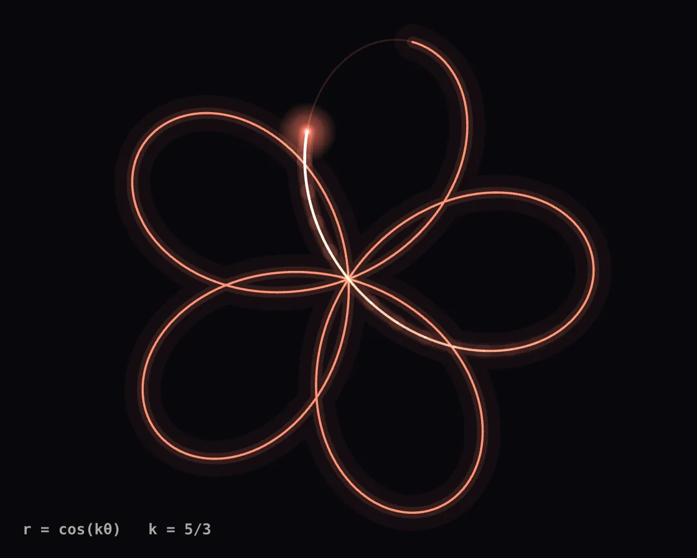

Rose curve
Rose curve is a Canvas effect: r = cos(kθ) traced by a comet pen, k gliding between fractions. One plain JavaScript file with no dependencies; add it with npx motion-library add rose-curve.

Open it live, tune it and copy the code
What is Rose curve?
A glowing pen traces a polar rose, holds it, then morphs into the next. The pointer picks the ratio n/d: across for n, down for d.
How does Rose curve work?
With k = n/d the curve closes after d·π turns when n·d is odd and 2d·π otherwise; three lighter-blended strokes of one path give the glow.
How do I add Rose curve to my website?
- In your project folder, run
npx motion-library add rose-curve. It writesanimations/rose-curve.js. Needs Node 18 or newer. - Import it and call it with a container element that has a size:
import fx from './animations/rose-curve.js'; const stop = fx(document.querySelector('#hero')); - Call
stop()to clean up, for example when a component unmounts.
Every setting below is also a flag, so you can install it already tuned: npx motion-library add rose-curve --speed 3.
What settings can I tweak?
| Setting | Flag | Default | Range | Step |
|---|---|---|---|---|
| Speed | --speed | 1 | 0.2 to 3 | 0.05 |
| Glow | --glow | 1 | 0 to 2.5 | 0.05 |
| Line width | --width | 1.8 | 0.6 to 4 | 0.1 |
Specifications
- Renderer
- Canvas 2D
- Category
- Generative & math
- Dependencies
- None
- File size
- 7.3 KB, unminified
- Interactive
- Yes: it responds to the pointer
- Reduced motion
- Respects prefers-reduced-motion
- Licence
- MIT-0: use it anywhere, no credit needed
Source code
// Rose curve: the polar equation r = cos(kθ). With k = n/d in lowest terms the curve closes after d·π turns (n·d odd)
// or 2d·π (otherwise) and has n or 2n petals. A pen traces each rose with a hot comet head over a faint full drawing;
// then k glides to the next fraction, and the in-between values draw curves that never quite close.
// The pointer picks k from the rose table: n = 1..8 across, d = 1..5 down, and k glides to n/d as you move.
const PARAMS = { speed: 1, glow: 1, width: 1.8 };
export default function (stage) {
const canvas = document.createElement('canvas');
canvas.style.cssText = 'position:absolute;inset:0;width:100%;height:100%;display:block';
stage.append(canvas);
const ctx = canvas.getContext('2d');
const reduce = matchMedia('(prefers-reduced-motion: reduce)').matches;
let W = 0, H = 0, D = 1;
const resize = () => { D = Math.min(devicePixelRatio, 2); W = stage.clientWidth || 1; H = stage.clientHeight || 1; canvas.width = W * D | 0; canvas.height = H * D | 0; };
const ro = new ResizeObserver(resize); ro.observe(stage); resize();
const KS = [[5, 3], [7, 4], [3, 1], [5, 2], [7, 3], [4, 1], [8, 5], [6, 5], [2, 1], [9, 4]];
const HUES = [[255, 120, 90], [255, 196, 90], [120, 220, 255], [190, 140, 255], [255, 110, 170], [110, 240, 190]];
const period = ([n, d]) => (n * d) % 2 ? d * Math.PI : 2 * d * Math.PI;
const DRAW = 7, HOLD = 1.2, MORPH = 1.8, CYCLE = DRAW + HOLD + MORPH;
const ease = x => x < .5 ? 4 * x * x * x : 1 - Math.pow(-2 * x + 2, 3) / 2;
function path(k, th0, th1, R, cx, cy, rot) {
const steps = Math.max(2, Math.ceil((th1 - th0) * 90));
ctx.beginPath();
for (let i = 0; i <= steps; i++) {
const th = th0 + (th1 - th0) * i / steps, r = R * Math.cos(k * th);
const x = cx + r * Math.cos(th + rot), y = cy + r * Math.sin(th + rot);
i ? ctx.lineTo(x, y) : ctx.moveTo(x, y);
}
}
// the pointer picks a cell of the rose table, n across and d down, held with a little hysteresis at the borders
const NC = 8, NR = 5, gcd = (a, b) => b ? gcd(b, a % b) : a;
let ci = 4, cj = 2, lastMove = -1e9, wasLive = false;
const pick = (u, i, N) => { const c = u * N - .5; return Math.abs(c - i) > .68 ? Math.max(0, Math.min(N - 1, Math.round(c))) : i; };
const onMove = e => { const b = canvas.getBoundingClientRect(); ci = pick((e.clientX - b.left) / b.width, ci, NC); cj = pick((e.clientY - b.top) / b.height, cj, NR); lastMove = performance.now(); };
const onLeave = () => { lastMove = -1e9; };
canvas.addEventListener('pointermove', onMove); canvas.addEventListener('pointerdown', onMove); canvas.addEventListener('pointerleave', onLeave);
const cell = () => { const n = ci + 1, d = cj + 1, g = gcd(n, d); return [n / g, d / g]; };
// idle: a timeline of roses (draw, hold, glide to the next); steering: k glides to the cell under the pointer
let gi = 0, gu = reduce ? DRAW + .5 : 0, A = KS[0], cA = HUES[0], tt = 0;
let k = KS[0][0] / KS[0][1], col = cA.slice(), cur = A, Pk = period(A), Pfrom = Pk, comet = 0, head = 0;
let raf, last = performance.now();
function frame(now) {
const dts = Math.min(.25, (now - last) / 1000); last = now;
const dt = Math.min(.05, dts), live = now - lastMove < 2500;
if (!reduce) tt += dts * PARAMS.speed;
const R = Math.min(W, H) * .44, cx = W / 2, cy = H / 2, rot = reduce ? -Math.PI / 2 : tt * .04 - Math.PI / 2;
ctx.setTransform(D, 0, 0, D, 0, 0);
ctx.globalCompositeOperation = 'source-over';
ctx.fillStyle = '#08080c'; ctx.fillRect(0, 0, W, H);
ctx.globalCompositeOperation = 'lighter'; ctx.lineJoin = 'round'; ctx.lineCap = 'round';
const lw = PARAMS.width, gw = PARAMS.glow;
let P, label;
if (live) {
if (!wasLive) { comet = head * Pk; Pfrom = Pk; }
const c = cell();
if (c[0] !== cur[0] || c[1] !== cur[1]) { Pfrom = Pk; cur = c; }
// while k glides the curve doesn't close, so it is drawn over the longer of the two periods
const kT = cur[0] / cur[1], f = 1 - Math.exp(-dt * 7);
k += (kT - k) * f; if (Math.abs(kT - k) < 2e-4) { k = kT; Pfrom = period(cur); }
const ct = HUES[(cur[0] * 3 + cur[1] * 5) % HUES.length];
for (let i = 0; i < 3; i++) col[i] += (ct[i] - col[i]) * (1 - Math.exp(-dt * 6));
head += (1 - head) * (1 - Math.exp(-dt * 5));
Pk = P = Math.max(Pfrom, period(cur));
if (!reduce) comet = (comet + dts * PARAMS.speed * Pk / DRAW * 1.6) % Pk;
label = `${cur[0]}/${cur[1]}`;
wasLive = true;
} else {
if (wasLive) { A = cur; cA = col.slice(); gu = DRAW; wasLive = false; } // hold the rose you chose, then glide on
if (!reduce) gu += dts * PARAMS.speed;
while (gu >= CYCLE) { gu -= CYCLE; gi++; A = KS[gi % KS.length]; cA = HUES[gi % HUES.length]; }
const B = KS[(gi + 1) % KS.length], cB = HUES[(gi + 1) % HUES.length];
const kA = A[0] / A[1], kB = B[0] / B[1];
if (gu < DRAW + HOLD) { k = kA; for (let i = 0; i < 3; i++) col[i] = cA[i]; P = period(A); head = Math.min(1, gu / DRAW); label = `${A[0]}/${A[1]}`; cur = A; }
else { const f = ease((gu - DRAW - HOLD) / MORPH); k = kA + (kB - kA) * f; for (let i = 0; i < 3; i++) col[i] = cA[i] + (cB[i] - cA[i]) * f; P = Math.max(period(A), period(B)); head = 1; label = k.toFixed(3); cur = f > .999 ? B : A; }
Pk = P;
}
const rgb = a => `rgba(${col[0] | 0},${col[1] | 0},${col[2] | 0},${a})`;
// the faint full figure, then a wide soft pass and a thin bright pass over what the pen has drawn
path(k, 0, P, R, cx, cy, rot); ctx.strokeStyle = rgb(.16); ctx.lineWidth = lw * .8; ctx.stroke();
const drawn = P * head;
path(k, 0, drawn, R, cx, cy, rot);
ctx.strokeStyle = rgb(.045 * gw); ctx.lineWidth = lw * 16; ctx.stroke();
ctx.strokeStyle = rgb(.12 * gw); ctx.lineWidth = lw * 5; ctx.stroke();
ctx.strokeStyle = rgb(.85); ctx.lineWidth = lw; ctx.stroke();
const pen = live ? (reduce ? -1 : comet) : head < 1 ? drawn : -1;
if (pen >= 0) { // the comet: the last stretch of the trace, in rising brightness (it keeps circling while you steer)
const tail = live ? P * .12 : Math.min(drawn, P * .12), segs = 14;
for (let s = 0; s < segs; s++) {
const a0 = pen - tail * (1 - s / segs), a1 = pen - tail * (1 - (s + 1) / segs), f = (s + 1) / segs;
path(k, a0, a1, R, cx, cy, rot);
ctx.strokeStyle = rgb(.12 * f * gw); ctx.lineWidth = lw * 7; ctx.stroke();
ctx.strokeStyle = `rgba(255,248,236,${.7 * f * f})`; ctx.lineWidth = lw * 1.3; ctx.stroke();
}
const r = R * Math.cos(k * pen), x = cx + r * Math.cos(pen + rot), y = cy + r * Math.sin(pen + rot);
const g = ctx.createRadialGradient(x, y, 0, x, y, 22 * gw + 2);
g.addColorStop(0, 'rgba(255,250,240,.95)'); g.addColorStop(.15, rgb(.6)); g.addColorStop(1, rgb(0));
ctx.fillStyle = g; ctx.fillRect(x - 24 * gw - 2, y - 24 * gw - 2, 48 * gw + 4, 48 * gw + 4);
}
ctx.globalCompositeOperation = 'source-over';
ctx.font = '600 12px ui-monospace, SFMono-Regular, Menlo, monospace'; ctx.textBaseline = 'bottom';
ctx.fillStyle = 'rgba(240,236,228,.7)'; ctx.fillText('r = cos(kθ) k = ' + label, 18, H - 16);
raf = requestAnimationFrame(frame);
}
raf = requestAnimationFrame(frame);
return () => { cancelAnimationFrame(raf); ro.disconnect(); canvas.removeEventListener('pointermove', onMove); canvas.removeEventListener('pointerdown', onMove); canvas.removeEventListener('pointerleave', onLeave); canvas.remove(); };
}